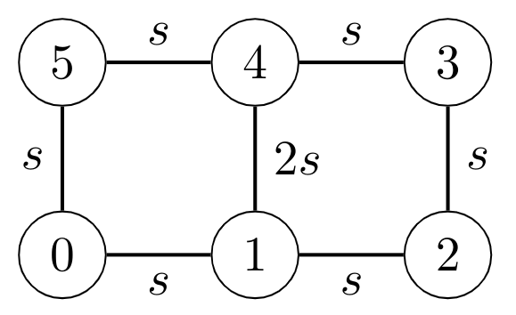

What lattice polytopes can tell us about networks of oscillators?
How discrete geometers can solve the mystery of synchronization
Tianran Chen
Department of Mathematics
Auburn University at Montgomery
June 8, 2023
Copenhagen-Jerusalem Combinatorics Seminar
Symmetric edge polytope
For a graph $G$, the
symmetric edge polytope
is
\[
P_G = \operatorname{conv} \{
\pm (\mathbf{e}_i - \mathbf{e}_j)
\mid i \sim j
\}
\]
where $i \sim j$ means $i,j$ are adjacent in $G$.
T. Matsui, A. Higashitani, Y. Nagazawa, H. Ohsugi, and T. Hibi,
Roots of Ehrhart polynomials arising from graphs,
J. Algebraic Combin., 34 (2011), pp. 721--749.
A generalization of the root system polytope of type $A_n$.
($P_{K_n}$)
\[
P_{K_3} =
\operatorname{conv}
\{
\pm( \mathbf{e}_0 - \mathbf{e}_1 ),
\pm( \mathbf{e}_1 - \mathbf{e}_2 ),
\pm( \mathbf{e}_2 - \mathbf{e}_0 )
\}
\;\;
(\text{with } \mathbf{e}_0 = \mathbf{0})
\]
Early interests:
Ehrhart polynomials of special symmetric edge polytopes
share properties similar to the Riemann $\zeta$-function.
Some known properties
-
For a connected simple graph $G$ of $n+1$ nodes,
$P_G$ is $n$-dimensional.
-
$P_G$ is reflexive.
-
Facial complexes of $P_G$ have been described
for certain families of $G$.
-
For certain families of graphs,
$\operatorname{Vol}(P_G)$ are given explicit formulae.
(E.g., trees, complete graphs, cycles, wheels graphs, graphs formed by glue cycles along edges)
Directed edge polytope
For a digraph $\vec{G} = (V,\vec{E})$, the
directed edge polytope
is
\[
P_{\vec{G}} = \operatorname{conv} \{
\pm (\mathbf{e}_i - \mathbf{e}_j)
\mid (i,j) \in \vec{E}
\}
\cup \{ \mathbf{0} \}.
\]
The inclusion of the origin $\{ \mathbf{0} \}$ is optional.
Kuramoto model
Standard model for studying spontaneous synchronizations
in networks of weakly coupled oscillators
(Yoshiki Kuramoto 1975).
Kuramoto Y. (1975) Self-entrainment of a population of coupled non-linear oscillators. In: Araki H. (eds) International Symposium on Mathematical Problems in Theoretical Physics. Lecture Notes in Physics, vol 39. Springer, Berlin, Heidelberg.
Mechanical model:
Massless particles rotating on the unit circle
coupled with one another via springs.
Each particle has its own natural frequency
(angular velocity).
The strength of influence of one particle on another
is proportional to the sine of the phase difference.
The original focus was the uniform and all-to-all couplings.
But non-uniform and sparse networks can also be considered.
Real-world oscillator networks
The flashing cycle of a firefly can be modeled
as the unit circle $\mathbb{R}/2\pi \mathbb{Z}$.
For a population of fireflies:
\[
\dot{\theta}_i = \omega_i - \sum_{j \sim i} k_{ij} \sin(\theta_i - \theta_j)
\]
-
$\theta_i$: phase of its flashing cycle,
-
$\omega_i$: its natural frequency,
-
$k_{ij} = k_{ji}$ describes the coupling,
-
$j \sim i$ means fireflies $i$ and $j$
can influence each other.
Some species of fireflies can synchronize their flashings
to have the exact same frequencies.
(Frequency synchronization)
Kuramoto model everywhere
Equations similar to
\[
\dot{\theta}_i =
\omega_i -
\sum_{j \sim i} k_{ij} \sin(\theta_i - \theta_j)
\]
can be found in many applications. E.g.,
-
biological oscillators
(heart cells, brain cells,......)
-
vehicle coordination
-
Swarm formation for drones
-
electric power networks
-
clock synchronization
(A fairly recent survey)
Dörfler, F. & Bullo, F.
Synchronization in complex networks of phase oscillators: A survey.
Automatica 50, 1539-1564 (2014).
\[
\dot{\theta}_i =
\omega_i -
\sum_{j \sim i} k_{ij} \sin(\theta_i - \theta_j)
\]
Interpretation:
\[
\begin{gathered}
\text{Angular velocity} \\
\text{of oscillator $i$}
\end{gathered}
=
\begin{gathered}
\text{Its natural} \\
\text{frequency}
\end{gathered}
-
\sum_{j \sim i}
\begin{gathered}
\text{Influence} \\
\text{from $j$}
\end{gathered}
\]
Frequency synchronization configurations
Kuramoto's system of ODE:
\[
\dot{\theta}_i =
\omega_i -
\sum_{j \sim i} k_{ij} \sin(\theta_i - \theta_j)
\]
One core problem:
frequency synchronization
-
when the tendency of oscillators relaxing to their limit cycles
and the influence of their neighbors reach an equilibrium,
-
and the oscillators are all tuned to their mean frequency.
There are several distinct notions of "synchronization",
including "phase synchronization" or "phase cohesion",
which are very different.
I.e.,
$\dot{\theta}_i = \overline{\omega}$
for each $i$.
They are the zeros of the nonlinear system
\[
\overline{\omega}
=
\omega_i -
\sum_{j \sim i} k_{ij}
\sin(
\theta_{i} - \theta_{j}
),
\quad\text{for each } i.
\]
The static picture
Understanding synchronization
$\Longrightarrow$
solving nonlinear system
\[
\overline{\omega}
=
\omega_i -
\sum_{j \sim i} k_{ij}
\sin(
\theta_{i} - \theta_{j}
),
\quad\text{for each } i.
\]
in the unknowns $\theta_i$
(everything else are given parameters).
There are other complicated issues
- Stability
- Geometry of limit cycle
- Bifurcation
- ......
We are mainly interested in the solutions to this nonlinear system.
(Many open problems)
Interestingly, this system coincide with the
PV-type power-flow equations
from electric engineering
(describing power networks).
What symmetric edge polytopes can tell us...
...about the solutions to
\[
\overline{\omega}
=
\omega_i -
\sum_{j \sim i} k_{ij}
\sin(
\theta_{i} - \theta_{j}
),
\quad\text{for each } i.
\]
Observation:
Both are derived from a graph $G$.
-
The normalized volume of $P_G$
is a sharp upperbound for the number of solutions
("sharp" in the complex sense)
-
The simplices in the facets of $P_G$
correspond to individual solutions.
(There is a triangulation of the facets
whose cells biject to the solutions)
-
The facets of $P_G$
give us a "decomposition" to the solution set.
-
A special regular subdivision of $P_G$
gives rise to a discrete encoding to "oscillator death".
Counting synchronization configurations
Given a (connected and simple) graph $G$,
how many distinct solutions $(\theta_1,\ldots,\theta_n)$
can we have for
\[
\overline{\omega}
=
\omega_i -
\sum_{j \sim i} k_{ij}
\sin(
\theta_{i} - \theta_{j}
),
\quad\text{for each } i ?
\]
Too hard!
(There appear to be no answers
that is easier than solving the equations)
A better counting question
Given a (connected and simple) graph $G$ of $n+1$ nodes,
what is the maximum number of solutions the system
\[
\overline{\omega}
=
\omega_i -
\sum_{j \sim i} k_{ij}
\sin(
\theta_{i} - \theta_{j}
),
\quad\text{for each } i
\]
can have?
(over all possible choices of parameters)
Lower bound (of the maximum):
\[
2^n
\]
Came from Morse theory
(Sum of Betti numbers of $(S^1)^n$)
Upper bound
\[
\binom{2n}{n}
\]
Came from bi-homogeneous Bézout number.
Baillieul, J. & Byrnes, C.
Geometric critical point analysis of lossless power system models.
IEEE T Circuits Syst 29, 724-737 (1982).
For a fixed graph $G$ of $n+1$ nodes,
\[
\overline{\omega}
=
\omega_i -
\sum_{j \sim i} k_{ij}
\sin(
\theta_{i} - \theta_{j}
),
\quad\text{for each } i
\]
we consider all choices of parameters.
\[
2^n \;\le\;
\text{Max. n. o. solutions}
\;\le\;
\binom{2n}{n}
\]
Both bounds are topology-blind.
But the max. n. o. solutions
is (highly) topology dependent.
Indeed,
\begin{align*}
\text{Max. for $T_n$ }
&=
2^n &
\text{Max. for $K_n$ }
&=
\binom{2n}{n}
\end{align*}
Molzahn, D. K., Mehta, D. & Niemerg, M.
Toward Topologically Based Upper Bounds on the Number of Power Flow Solutions.
2016 Am Control Conf (ACC) 5927-5932 (2016) doi:10.1109/acc.2016.7526599.
Network topology-sensitive root count
For a (connected) graph $G$,
the max. n. o. solutions to
\[
\overline{\omega}
=
\omega_i -
\sum_{j \sim i} k_{ij}
\sin(
\theta_{i} - \theta_{j}
),
\quad\text{for each } i
\]
is bounded by
\[
\operatorname{Vol}( \; P_G \; )
\]
This bound is sharp,
if we also consider complex roots.
(C. Korchevskaia, Lindberg 2022)
For generic $\omega_i$'s and
generic but symmetric $k_{ij}$'s,
the number of complex root is exactly
\[
\operatorname{Vol}( \; P_G \; )
\]
Chen, T., Korchevskaia, E. & Lindberg, J.
On the typical and atypical solutions to the Kuramoto equations.
ArXiv (2022) doi:10.48550/arxiv.2210.00784.
Chen, T.
Unmixing the Mixed Volume Computation.
Discrete Comput Geom 62, 55-86 (2019).
The simple example of $K_3$ ($C_3$)
\[
\begin{aligned}
\bar{\omega} &= \omega_0 - k_{01} \sin(\theta_0 - \theta_1) - k_{02} \sin(\theta_0 - \theta_2) \\
\bar{\omega} &= \omega_1 - k_{10} \sin(\theta_1 - \theta_0) - k_{12} \sin(\theta_1 - \theta_2) \\
\bar{\omega} &= \omega_2 - k_{20} \sin(\theta_2 - \theta_0) - k_{21} \sin(\theta_2 - \theta_1)
\end{aligned}
\]
This case has been studied in detail in the 1970s.
It was analyzed rigorously by Baillieul and Byrnes in the early 1980s.
(Baillieul, J. & Byrnes, C. Geometric critical point analysis of lossless power system models. IEEE T Circuits Syst 29, 724-737 (1982).)
\[
\text{Max. n. o. solutions}
\;=\;
\operatorname{Vol}(\; P_G \;)
\;=\;
6
\]
Simplices in this special triangulation biject to
the 6 solutions via a concrete deformation
(a homotopy).
Some root counting results
| Types of network |
AP bound |
| Complete graphs $K_n$ |
$\binom{2n}{n}$ |
| Trees $T_n$ |
$2^n$ |
| Cycles $C_n$ |
$(n+1) \binom{n}{\lfloor n/2 \rfloor}$ |
Odd cycles $C_{i+1}$ and $C_{j+1}$
glued together along an edge |
$(i+j+2ij) \binom{2i}{i} \binom{2j}{j}$ |
| Odd wheels $K_1 * C_n$ |
$(1-\sqrt{3})^n + (1+\sqrt{3})^n$ |
| Even wheels $K_1 * C_n$ |
$(1-\sqrt{3})^n + (1+\sqrt{3})^n - 2$ |
T. Chen, R. Davis, D. Mehta,
Counting equilibria of the Kuramoto model using birationally invariant intersection index
SIAM Journal on Applied Algebra and Geometry, 2018, Vol. 2, No. 4 pp. 489-507
A D'Alì, E Delucchi, M Michałek,
Many faces of symmetric edge polytopes
Electron J Comb 29, (2022).
H. Ohsugi, A. Tsuchiya,
The $h^*$-Polynomials of Locally Anti-Blocking Lattice Polytopes and Their ùõæ-Positivity.
Discrete Comput Geom 66, 701–722 (2021). https://doi.org/10.1007/s00454-020-00236-6
What about real root count?
Recall that......
(C., Korchevskaia, Lindberg)
For generic $\omega_i$'s and
generic but symmetric $k_{ij}$'s,
the number of complex roots is
$\operatorname{Vol}( \; P_G \; )$.
| Types of network |
Max. $\mathbb{R}$ roots |
Max. $\mathbb{C}$ roots |
| Complete graph $K_3$ |
6 |
6 |
| Trees $T_{n+1}$ |
$2^{n}$ |
$2^{n}$ |
| Cycles |
$(n+1) \binom{n}{\lfloor n/2 \rfloor}$ |
$(n+1) \binom{n}{\lfloor n/2 \rfloor}$ |
Baillieul, J. & Byrnes, C.
Geometric critical point analysis of lossless power system models.
IEEE T Circuits Syst 29, 724-737 (1982).
J. Lindberg, A. Zachariah, N. Boston, B. Lesieutre,
The Distribution of the Number of Real Solutions to the Power Flow Equations
IEEE T Power Syst PP, (2022).
In general......
\[
\text{Max. $\mathbb{R}$ roots}
\;\stackrel{?}{=}\;
\text{Max. $\mathbb{C}$ roots}
\;=\;
\operatorname{Vol}(\; P_G \;)
\]
for graphs other than trees or cycles?
We do not know!
When is maximum not achieved
\[
\begin{gathered}
\text{Generic n.o.} \\
\mathbb{C}\text{-roots} \\
\end{gathered}
\;\;=\;
\begin{gathered}
\text{Max. n.o.} \\
\mathbb{C}\text{-roots} \\
\end{gathered}
\;\;=\;
\operatorname{Vol}(\; P_G \;)
\]
Natural questions to ask:
- when will the actual root count drop below this maximum?
- by how much?
Missing roots: Exceptional couplings
(Sard's)
For generic choices of
$\omega_1,\ldots,\omega_n$ the roots of
\[
f(\theta_1,\ldots,\theta_n) =
\omega_i - \sum_{j \sim i} k_{ij} \sin(\theta_i - \theta_j)
\quad\text{for } i = 1,\ldots,n
\]
(fixing $\theta_0 = 0$)
are all isolated and regular.
Generic choices of $\omega$'s
help us to avoid multiplicities.
Under the assumption of generic $\omega$'s,
what are the choices of coupling coefficients
$k_{ij}$'s for which
\[
\text{Actual n.o. $\mathbb{C}$-root}
\; < \;
\text{Generic/max n.o. $\mathbb{C}$-root}
\]
This set is the exceptional coupling coefficients.
Cycle basis description of exceptional coupling
(C., Korchevskaia, Lindberg)
Let $G$ be a graph consisting of $d$ independent even cycles,
$C_1,\ldots,C_d$ that overlap at a single edge.
Let $U_i \subset \{ -1, 0, +1 \}^{|E(G)|}$,
for $i=1,\ldots,d$ be the set of
balanced primitive cycle vectors
associated with $C_1,\ldots,C_d$.
Then the set of exceptional coupling is the
union of subsets satisfying
\[
\sum_{j=1}^d
(-1)^{|C_{i_j}| / 2} \mathbf{k}^{\vec{\eta}_{i_j}}
= 1
\text{ where }
(\vec{\eta}_{i_1},\ldots,\vec{\eta}_{i_t}) \in
U_{i_1} \times \cdots \times U_{i_t}
\text{ is consistent}
\]
Chen, T., Korchevskaia, E. & Lindberg, J.
On the typical and atypical solutions to the Kuramoto equations.
ArXiv (2022) doi:10.48550/arxiv.2210.00784.
Takeaway:
Descriptions of exceptional coupling coefficients
come from certain subdigraphs,
which, in turn, come from the
facial complex of $P_G$.
General description
Proposition.
Let $\mathcal{B}$ be the set of subgraphs of $G$ that are
- bridgeless (and hence cyclic), and
- maximally bipartite in their induced subgraphs.
Then the set of exceptional coupling coefficients
is the union
\[
\bigcup_{B \in \mathcal{G}} \mathcal{K}(B).
\]
where each $\mathcal{K}(B)$ is the exceptional coupling coefficients
on $B$, similar to that given in the previous
slide.
Example: $C_4$
There are 4 coupling coefficients
$k_{01},k_{12},k_{23},k_{30} \ne 0$
Proposition.
The $\mathbb{C}$-root count is less than the generic root count
$\operatorname{Vol}(P_{C_4}) = 12$
if and only if......
\[
\begin{aligned}
\frac{ k_{01} k_{12} }{ k_{23} k_{30} } &= 1
&&\text{or} &
\frac{ k_{01} k_{30} }{ k_{12} k_{23} } &= 1
&&\text{or} &
\frac{ k_{01} k_{23} }{ k_{12} k_{30} } &= 1
\end{aligned}
\]
Takeaway:
These 3 subdigraphs come from
the 6 facets of $P_{C_4}$.
Non-isolated synchronization configurations
Synchronization configurations
with at least one degree of freedom.
-
($K_n$): P. Ashwin, C. Bick, and O. Burylko.
Identical Phase Oscillator Networks: Bifurcations, Symmetry and Reversibility for Generalized Coupling,
Frontiers in Applied Mathematics and Statistics, 2 (2016)
-
($K_n$) O. Coss, J. D. Hauenstein, H. Hong, and D. K. Molzahn.
Locating and counting equilibria of the Kuramoto model with rank-one coupling,
SIAM J. Appl. Algebra Geom., 2 (2018)
-
($K_n$ and $C_n$) J. Lindberg, A. Zachariah, N. Boston, and B. Lesieutre.
The Distribution of the Number of Real Solutions to the Power Flow Equations.
IEEE Transactions on Power Systems, PP (2022)
-
D. Sclosa.
Kuramoto networks with infinitely many stable equilibria.
(2022)
-
......
(D. Sclosa 2022)
For every $d \ge 1$ there is a Kuramoto network
whose stable equilibria form a manifold of dimension $d$
The $C_4$ example, again
When the natural frequencies are identical,
and the coupling coefficients $k_{ij}$'s are identical,
we can construct three 1-dimensional orbits
of synchronization configurations
(parametrized by $t$).
\[
\left\{
\begin{aligned}
\theta_0 &= 0 \\
\theta_1 &= t + \pi + \sigma^{10} \\
\theta_2 &= \pi + \sigma^{12}_{10} \\
\theta_3 &= t + \sigma^{30} \\
\end{aligned}
\right.
\quad
\left\{
\begin{aligned}
\theta_0 &= 0 \\
\theta_1 &= \sigma^{10} + t \\
\theta_2 &= \pi + \sigma^{21}_{10} \\
\theta_3 &= \sigma^{30} - t
\end{aligned}
\right.
\quad
\left\{
\begin{aligned}
\theta_0 &= 0 \\
\theta_1 &= \sigma^{10} - t \\
\theta_2 &= \sigma^{21}_{10} -2t \\ %\sigma(k_{21}/k_{10}) \\
\theta_3 &= \pi + \sigma^{30} -t \\
\end{aligned}
\right.
\]
$\sigma$'s are phase shift values, $0$ or $\pi$,
that only used to adjust for the signs of $k_{ij}$'s
(not very important).
These three orbits correspond to the 6 facets
(3 antipode pairs) of $P_{C_4}$.
Constructing positive-dimensional solutions
(C., Korchevskaia, Lindberg)
For $G = C_{2k}$, if......
-
$(G,K)$ contains a "balanced" subnetwork $(\vec{H},K)$, and
-
$|k_{ij}|$ are identical,
then
\[
\boldsymbol{\theta}(t) =
\log \left[
-\mathfrak{i}
(
\lambda \cdot
\boldsymbol{\eta}_{\vec{T}} \circ
(\mathbf{k}(\vec{T})^{-I})
)^{Q(\vec{T})^{-1}}
\right]
\]
form an 1-dimensional complex component of
synchronization configurations,
which contains 1-dimensional real orbit.
(Require further explanation) Main point:
In this, $\vec{T}$, $\eta_{\vec{T}}$, and the map itself
are parametrized by (antipode pairs of) facets of $P_G$.
\[
\text{Facets of } P_G
\Longrightarrow
\text{parametrization of 1D orbits}
\]
Beyond unicycles: 2 cycles sharing an edge

The construction produces the
1-dimensional real solution set
\[
(\theta_0,\theta_1,\theta_2,\theta_3,\theta_4,\theta_5) =
(
0,
t + \pi,
0,
t,
\pi,
t
)
\]
This is one of many real orbits,
one for each antipode pair of facets of $P_G$.
Beyond unicycle networks
(C., Korchevskaia, Lindberg)
Suppose $G$ consists of $d$ independent even cycles
$C_1,\ldots,C_d$ that share a single edge $e$,
then with the choice of the coupling coefficients
\[
k_{ij} =
\begin{cases}
sd &\text{if } \{i,j\} = e \text{ (shared edge)}\\
s &\text{othewise},
\end{cases}
\]
for any $s \ne 0$,
and identical natural frequencies $\omega$'s,
there are 1-dimensional real/complex
components of synchronization configurations.
(Slightly more complicated formula)
They correspond to antipode pairs of facets of $P_G$.
Toric amplitude oscillators
A toy model for a network of $n+1$ amplitude oscillators on the plane
\[
\left\{
\begin{alignedat}{5}
\dot{\theta}_i =
\omega_i - \sum_{j \sim i} k_{ij} \cosh(\rho_i - \rho_j)
\sin(\theta_i - \theta_j) \\
\dot{\rho}_i =
0 - \sum_{j \sim i} k_{ij} \sinh(\rho_i - \rho_j)
\cos(\theta_i - \theta_j) \\
\end{alignedat}
\right.
\;\text{for } i=1,\dots,n.
\]
- $x_i = e^{-\rho_i + \mathfrak{i} \theta_i}$
- $\theta_i$ is still the phase angle
- $\rho_i = - \ln |x_i|$ measures the radial position in log scale
- $\theta_0,\rho_0 = 0$ fixes the f.o.r.
The system live in the algebraic torus
$(\mathbb{C}^*)^n = (\mathbb{C} \setminus \{0\})^n$.
Locking configuration
\[
\left\{
\begin{alignedat}{5}
\dot{\theta}_i =
\omega_i - \sum_{j \sim i} k_{ij} \cosh(\rho_i - \rho_j)
\sin(\theta_i - \theta_j) \\
\dot{\rho}_i =
0 - \sum_{j \sim i} k_{ij} \sinh(\rho_i - \rho_j)
\cos(\theta_i - \theta_j) \\
\end{alignedat}
\right.
\;\text{for } i=1,\dots,n.
\]
A locked configuration
is a point $(\theta_0,\rho_0,\dots,\theta_n,\rho_n)$
such that
\[
\left\{
\begin{alignedat}{5}
\overline{\omega} =
\omega_i - \sum_{j \sim i} k_{ij} \cosh(\rho_i - \rho_j)
\sin(\theta_i - \theta_j) \\
0 =
0 - \sum_{j \sim i} k_{ij} \sinh(\rho_i - \rho_j)
\cos(\theta_i - \theta_j) \\
\end{alignedat}
\right.
\;\text{for } i=1,\dots,n.
\]
General adjacency polytopes
Given a connected graph $G$,
represented by its adjacency/edge list $A$
(list of edges and loops),
we consider a function
\[
f : A \to \mathcal{P}^n
\]
where $\mathcal{P}^n$ is the set of convex (lattice) polytopes
in $\mathbb{R}^n$.
The adjacency polytope of $G$,
induced by $f$, is the (lattice) polytope
\[
P =
\operatorname{conv}
\left(
\{ \mathbf{0} \}
\cup
\bigcup_{ \{i,j\} \in A } f(\{i,j\})
\right)
\; \subset \;
\mathbb{R}^n
\]
We only care about the properties that are invariant
under unimodular transformations.
Example.
Consider the complete graph with 3 nodes:
\begin{align*}
A &= \{\; \{0,1\}, \{1,2\}, \{2,0\} \;\} \\
f(\{i,j\}) &= \operatorname{conv} \{
\mathbf{e}_i - \mathbf{e}_j,
\mathbf{e}_j - \mathbf{e}_i
\}
\end{align*}
The adjacency polytope is the convex hull
\[
P =
\operatorname{conv}
\{
\mathbf{e}_0 - \mathbf{e}_1,
\mathbf{e}_1 - \mathbf{e}_0,
\mathbf{e}_1 - \mathbf{e}_2,
\mathbf{e}_2 - \mathbf{e}_1,
\mathbf{e}_2 - \mathbf{e}_0,
\mathbf{e}_0 - \mathbf{e}_2
\}
\]
-
Is there any connections between the
topological properties of $G$
and geometric properties of $P$?
-
How does this connection (if exist)
depends on the choice of $f$?
Adjacency polytopes (directed version)
Given a (weakly connected) digraph $\vec{G}$,
represented by its list of directed edges $A$ (and loops),
we consider a function
\[
f : A \to \mathcal{P}^n
\]
where $\mathcal{P}^n$ is the set of convex (lattice) polytopes
in $\mathbb{R}^n$.
The adjacency polytope of $\vec{G}$,
induced by $f$, is the (lattice) polytope
\[
P =
\operatorname{conv}
\left(
\{ \mathbf{0} \}
\cup
\bigcup_{ (i,j) \in A } f((i,j))
\right)
\; \subset \;
\mathbb{R}^n
\]
Again, they are only defined up to unimodular transformations.
Adjacency polytope of $\vec{G}$ with directed edge set $A$
induced by $f$:
\[
P =
\operatorname{conv}
\left(
\{ \mathbf{0} \}
\cup
\bigcup_{ (i,j) \in A } f((i,j))
\right)
\; \subset \;
\mathbb{R}^n
\]
Why should we care?
Turning into an algebraic system
Synchronization configurations are roots of the nonlinear system
\[
p_i(\theta_0,\ldots,\theta_n) =
\bar{\omega}_i - \sum_{ j \in \mathcal{N}_G(i) } k_{ij} \sin(\theta_i - \theta_j)
\quad\text{for } i=0,\dots,n,
\]
which is not algebraic.
There are many ways to reformulate it has an algebraic system
-
J. Baillieul and C. Byrnes
Geometric Critical Point Analysis of Lossless Power System Models
-
D. Mehta, N. Daleo, F. Dörfler, and J. Hauenstein
Algebraic geometrization of the Kuramoto model: Equilibria and stability analysis
-
O. Coss, J. Hauenstein, H. Hong, and D. Molzahn
Locating and Counting Equilibria of the Kuramoto Model with Rank-One Coupling
Algebraic formulation
Consider complex phase angles
\[
\theta_i \;\mapsto\;
z_i = \theta_i - \mathbf{i}\, r_i
\]
and the change of variables
\[
x_i = e^{\mathbf{i} z_i} = e^{r_i + \mathbf{i}\,\theta_i}
\]
and the transformation
\[
\sin(z_i - z_j) = \frac{
e^{\mathbf{i}z_i - \mathbf{i}z_j} -
e^{\mathbf{i}z_j - \mathbf{i}z_i}
}{2\mathbf{i}}
=
\frac{1}{2\mathbf{i}} \left(
\frac{x_i}{x_j} - \frac{x_j}{x_i}
\right)
\]
\[
\bar{\omega}_i - \sum_{ j \in \mathcal{N}_G(i) } k_{ij} \sin(\theta_i - \theta_j)
\]
\[
\to
\]
\[
\bar{\omega}_i - \sum_{ j \in \mathcal{N}_G(i) } a_{ij}'
\left(
\frac{x_i}{x_j} - \frac{x_j}{x_i}
\right)
\]
The transcendental system is turned into a Laurent polynomial system.
Randomization
\[
p_i (x_1,\ldots,x_n) =
\bar{\omega}_i - \sum_{ j \in \mathcal{N}_G(i) } a_{ij}'
\left(
\frac{x_i}{x_j} - \frac{x_j}{x_i}
\right)
=0
\quad\text{for } i = 1,\ldots,n
\]
is a system of $n$ Laurent polynomials in $n$ complex variables.
For numerical computation,
we usually consider the "randomized" version
\[
\begin{bmatrix}
q_1 (x_1,\ldots,x_n) \\
\vdots \\
q_n (x_1,\ldots,x_n)
\end{bmatrix}
=
M \cdot
\begin{bmatrix}
p_1 (x_1,\ldots,x_n) \\
\vdots \\
p_n (x_1,\ldots,x_n)
\end{bmatrix}
=
\mathbf{0}
\]
for an $n \times n$ nonsingular matrix $M$
to improve numerical condition.
\[
q_k(x_1,\ldots,x_n) =
c_{k,0,0} -
\sum_{ \{i,j\} \in E }
c_{k,i,j}
\left(
\frac{x_i}{x_j} - \frac{x_j}{x_i}
\right)
\]
The main questions
Synchronization configurations in a Kuramoto model
are represented by certain complex solutions to the
Laurent polynomial system
\[
q_k(x_1,\ldots,x_n) =
c_{k,0,0} -
\sum_{ \{i,j\} \in E }
c_{k,i,j}
\left(
\frac{x_i}{x_j} - \frac{x_j}{x_i}
\right)
= 0
\]
for $k=1,\ldots,n$.
- How many solutions are there?
- How to find all solutions?
- What can network topology tell us?
- Can we decompose large networks into smaller ones?
The root counting question
What is the maximum number of isolated complex solutions to the system
\[
q_k(x_1,\ldots,x_n) =
c_{k,0,0} -
\sum_{ \{i,j\} \in E }
c_{k,i,j}
\left(
\frac{x_i}{x_j} - \frac{x_j}{x_i}
\right)
= 0
\quad\text{for } k = 1,\ldots,n ?
\]
- Bezout number
- Bi-homogeneous Bezout number
- Bernshtein-Kushnirenko-Khovanskii bound
Root count as normalized volume
\[
q_k(x_1,\ldots,x_n) =
c_{k,0,0} -
\sum_{ \{i,j\} \in E }
c_{k,i,j}
\left(
\frac{x_i}{x_j} - \frac{x_j}{x_i}
\right)
= 0.
\]
Kushnirenko's Theorem.
The number of isolated $\mathbb{C}^*$-roots $(q_1,\ldots,q_n)$ has
is less than or equal to the normalized volume of
the common Newton polytope of $q_1,\ldots,q_n$.
The root count (n.o. "complex" synchronization configurations)
is bounded by the normalized volume of the polytope
\[
\operatorname{conv}
\left(
\bigcup_{ \{i,j\} \in E }
\{
\mathbf{e}_i - \mathbf{e}_j \;,\;
\mathbf{e}_j - \mathbf{e}_i
\}
\cup \{ \mathbf{0} \}
\right)
\]
This is precisely the adjacency polytope
of the network $G$ induced by
\[
f( \{ i,j \} ) =
\operatorname{conv}
\{
\mathbf{e}_i - \mathbf{e}_j \;,\;
\mathbf{e}_j - \mathbf{e}_i
\}.
\]
Adjacency polytope associated with the Kuramoto model
For a Kuramoto network of $n+1$ oscillators
modeled by $G = (V,E)$, we constructed the
adjacency polytope
\[
P =
\operatorname{conv}
\left(
\bigcup_{ \{i,j\} \in E }
f( \{i,j\} )
\cup \{ \mathbf{0} \}
\right)
\]
where
\[
f( \{i,j\} ) =
\operatorname{conv}
\{
\mathbf{e}_i - \mathbf{e}_j \;,\;
\mathbf{e}_j - \mathbf{e}_i
\}.
\]
The maximum number of "complex" synchronization configurations is
\[
n! \operatorname{Vol}_n (P),
\]
which we will call "adjacency polytope bound" or "AP bound"
(a special case of the BKK bound).
Other connections
Geometric invariants/constructs have natural correspondence
to aspects of the study of synchronization configurations
of Kuramoto networks.
| In adjacency polytope |
|
In networks |
| Normalized volume |
$=$ |
Max. complex roots |
| Simplicial facets |
$\to$ |
Spanning trees |
| Circuit facets |
$\to$ |
Spanning chordless cycles |
| Facets |
$\leftrightarrow$ |
Max. bipartite subgraphs |
| Triangulations |
$\leftarrow$ |
"Primitive" subnetwork decompositions |
| Unimodular triangulations |
$\leftarrow$ |
? |
The facet-subgraph correspondence
The graph-polytope correspondence given by the adjacency polytope construction
extends to the polyhedral complex.
We associate a subset $X \subseteq P$ with a subgraph $G_X$ of $G$
with the edge set
\[
\{ \;
\{ i, j \}
\;\mid\; \mathbf{e}_i - \mathbf{e}_j \in X \text{ or } \mathbf{e}_j - \mathbf{e}_i \in X
\}.
\]
Then each face of $P$ is associated with a subgraph of $G$
(an order-preserving map, indeed a matroid morphism).
(Actually, this is a map between the point configurations and subgraphs.)
Proposition.
If $F$ is a simplicial facet of $P$,
then $G_F$ is a spanning tree.
Proposition.
If $F$ is a circuit facet of $P$,
then $G_F$ is a spanning chordless cycle of $G$.
Facet-subgraph correspondence
Theorem. (C., R. Davis, E. Korchevskaia)
A subgraph $H$ of $G$ is a facet subgraph of $G$
if and only if it is a maximal bipartite subgraph of $G$.
Sketch of proof
($\Leftarrow$)
Let $B$ be a maximal bipartite subgraph of $G$
with partition of nodes $V_+ \cup V_-$.
Define $\boldsymbol{\alpha} = (\alpha_1,\dots,\alpha_n) \in \mathbb{R}^n$ with
\begin{align*}
\alpha_i &=
\begin{cases}
+1/2 &\text{if } i \in V_+ \\
-1/2 &\text{if } i \in V_-
\end{cases}
\end{align*}
Then
\[
\langle \mathbf{e}_i - \mathbf{e}_j \,,\, \boldsymbol{\alpha} \rangle =
\begin{cases}
0 &\text{if } i,j \in V_+ \text{ or } i,j \in V_- \\
\pm 1 &\text{if } i \in V_\pm \text{ and } j \in V_\mp.
\end{cases}
\]
Therefore, $\boldsymbol{\alpha}$ is an inner normal of $P$.
T. Chen, R. Davis, E. Korchevskaia,
Facets and facet subgraphs of adjacency polytopes.
arXiv:2107.12315
Face-subgraph correspondence
The same idea generalizes to faces of $P$ in general.
Theorem.
A connected nontrivial subgraph $H$ is a face subgraph
if and only if it is a maximally bipartite in the induced subgraph $G[N(H)]$.
Corollary.
If $F$ be a face of $P$,
then each connected component $H$ of $G_F$ is a maximal bipartite subgraph of
the induced subgraph $G[N(H)]$.
Corollary
$P$ is simplicial if and only if $G$ has no even cycles.
T. Chen, R. Davis, E. Korchevskaia,
Facets and facet subgraphs of adjacency polytopes.
arXiv:2107.12315
These indirectly provide positive answers
to Tien-Yien. Li's "bipartite subgraph ideal" conjecture.
(T.Y. Li, 2013 Lecture at Michigan State University)
Facet count estimation
How many facets can $P$ have?
Proposition.
(D'Alì, Delucchi, and Michałek)
If $G$ is bipartite, then
The number of facets $P$ has is bounded by $2^{n}$
Proposition.(C., Davis, Korchevskaia)
In general, the number of facets $P$ has is bounded by
\[
\beta \cdot 2^{n},
\]
where $\beta$ is the number of maximal bipartite subgraphs that $G$ has.
A D'Alì, E Delucchi, M Michałek,
Many faces of symmetric edge polytopes
arXiv:1910.05193
T. Chen, R. Davis, E. Korchevskaia,
Facets and facet subgraphs of adjacency polytopes.
arXiv:2107.12315
Symmetric edge polytopes
The same polytopes also appear in other seemingly independent fields of studies.
E.g., the symmetric edge polytope associated with a graph $G = (V,E)$:
\[
P_G =
\operatorname{conv}
\{
\mathbf{e}_i - \mathbf{e}_j
\mid \{i,j\} \in E
\},
\]
which is unimodularly equivalent to the adjacency polytope
of a Kuramoto network $G = (V,E)$.
"Early interest in symmetric edge polytopes was spurred by the fact that certain families
of polynomials sharing properties similar to Riemann’s $\zeta$-function are Ehrhart polynomials
of special symmetric edge polytopes..."
(from Many faces of symmetric edge polytopes
by A D'Alì, E Delucchi, M Michałek.)
T. Matsui, A. Higashitani, Y. Nagazawa, H. Ohsugi, T. Hibi,
Roots of Ehrhart polynomials arising from graphs,
Journal of Algebraic Combinatorics, 34 (2011).
Fundamental polytopes of metric spaces
In the study of finite metric spaces, A. M. Vershik
proposed the fundamental polytopes of metric spaces
in 2015.
For a a finite metric space $(X,d)$, its
fundamental polytope is
\[
\operatorname{conv}
\left\{
\frac{ \mathbf{e}_i - \mathbf{e}_j }{ d(i,j) }
\;:\; i,j \in X
\right\}.
\]
A. M. Vershik,
Classification of finite metric spaces and combinatorics of convex polytopes,
Arnold Mathematical Journal, 1 (2015), pp. 75–81.
E. Delucchi, L. Hoessly,
Fundamental polytopes of metric trees via hyperplane arrangements,
arXiv:1612.05534, (2016)
J. Gordon, F. Petrov,
Combinatorics of the Lipschitz polytope,
Arnold Mathematical Journal, 3 (2017), pp. 205–218.
F. D. Jevtic, M. Jelic, and R. T. Zivaljevic,
Cyclohedron and Kantorovich–Rubinstein polytopes,
Arnold Mathematical Journal, 4 (2018), pp. 87–112.
Power-flow equations (Lossless PQ-formulation)
Power networks
carry alternating current (AC) electric power.
The power-flow equations (a.k.a. load-flow equations)
describe the synchronization/balancing conditions
of a power network.
Derived from Kirchhoff's circuit laws,
the "PQ-type" power-flow equations for power network $G = (V,E)$
(with loops)
consisting of $n+1$ buses
(buses $0,1,\ldots,n$) is a system of $n$ equations
\[
S_i = \sum_{j \in N_G(i)} \overline{Y}_{ij} v_i \overline{v}_j
\quad\text{for } i = 1,\dots,n
\]
in the $n$ nonzero complex variables
$v_1, \dots, v_n$ with constant $v_0 = 1$
, where $\overline{v}_j$ is the
complex conjugate of $v_j$
Not an algebraic system.
Turning into an algebraic system
Examples of different approaches of turning power-flow equations into
polynomial systems
-
J. Baillieul and C. Byrnes
Geometric Critical Point Analysis of Lossless Power System Models. (1982)
IEEE Transactions on Circuits and Systems
-
T.-Y. Li, T. Sauer, and J. Yorke
Numerical Solution of a Class of Deficient Polynomial Systems
SIAM Journal of Numerical Analysis (1987)
-
(Recent survey) D. Mehta, D. Molzahn and K. Turitsyn
"Recent advances in computational methods for the power flow equations",
(2016) American Control Conference.
(Not a complete list)
\[
S_i - \sum_{j \in N_G(i)} \overline{Y}_{ij} v_i \overline{v}_j
\quad\text{for } i = 1,\dots,n
\]
Introducing new variables $u_i = \overline{v}_i$:
\[
S_i - \sum_{j \in N_G(i)} \overline{Y}_{ij} v_i u_j
\quad\text{for } i = 1,\dots,n
\]
We can consider the square system
\[
\left\{
\begin{aligned}
S_i &- \sum_{j \in N_G(i)} \overline{Y}_{ij} v_i u_j
\quad\text{for } i = 1,\dots,n \\
\overline{S}_i &- \sum_{j \in N_G(i)} Y_{ij} u_i v_j
\quad\text{for } i = 1,\dots,n
\end{aligned}
\right.
\]
which is a system of $2n$ polynomials
in the $2n$ (nonzero) complex variables $v_1,\ldots,v_n,u_1,\ldots,u_n$.
T.-Y. Li, T. Sauer, and J. Yorke,
Numerical Solution of a Class of Deficient Polynomial Systems,
SIAM Journal of Numerical Analysis (1987)
Adjacency polytope of PQ-type power-flow equations
After a similar randomization process,
the common Newton polytope is
\[
P =
\operatorname{conv}
\left(
\left\{
\begin{bmatrix}
\mathbf{e}_i \\
\mathbf{e}_j
\end{bmatrix}
,
\begin{bmatrix}
\mathbf{e}_j \\
\mathbf{e}_i
\end{bmatrix}
\,:\,
\{i,j\} \in A
\right\}
\cup \{ \mathbf{0} \}
\right)
\subset \mathbb{R}^{2n},
\]
where $A$ is the list of edges and loops (adjacency list).
This is equivalent to the construction
\begin{align*}
P &=
\operatorname{conv}
\left(
\{ \mathbf{0} \}
\cup
\bigcup_{ \{i,j\} \in A } f(\{i,j\})
\right)
\; \subset \;
\mathbb{R}^n
\\
f( \{i,j\} ) &=
\operatorname{conv}
\left\{
\begin{bmatrix}
\mathbf{e}_i \\
\mathbf{e}_j
\end{bmatrix}
,
\begin{bmatrix}
\mathbf{e}_j \\
\mathbf{e}_i
\end{bmatrix}
\right\}.
\end{align*}
The combinatorial properties of this polytope
is being actively studied.
R. Davis, T. Chen,
Computing volumes of adjacency polytopes via draconian sequences
arXiv:2007.11051
T. Chen, D. Mehta,
On the Network Topology Dependent Solution Count of the Algebraic Load Flow Equations,
IEEE Transactions on Power Systems, vol. 33, no. 2, pp. 1451-1460, March 2018, doi: 10.1109/TPWRS.2017.2724030.
Adjacency polytope
We outlined several examples of the constructions
\[
P =
\operatorname{conv}
\left(
\{ \mathbf{0} \}
\cup
\bigcup_{ \{i,j\} \in A } f(\{i,j\})
\right)
\]
induced by a function $f$ that maps the set of edges and loops $A$
to convex sets (or point configurations).
-
Is there any connections between the
topological properties of $G$
and geometric properties of $P$?
-
How does this connection (if exist)
depends on the choice of $f$?
-
What is the tropical interpretation here?
-
Are there other examples missed here?
Thank You!
ti@nranchen.org
http://www.tianranchen.org/
Research supported, in part, by National Science Foundation,
Auburn University at Montgomery Grant-In-Aid,
and AMS-Simons travel grants